Detalhes da Ordem de Produção
A tela de Ordem de produção pode ser localizada pelo menu:
Produção -> Ordem de produção
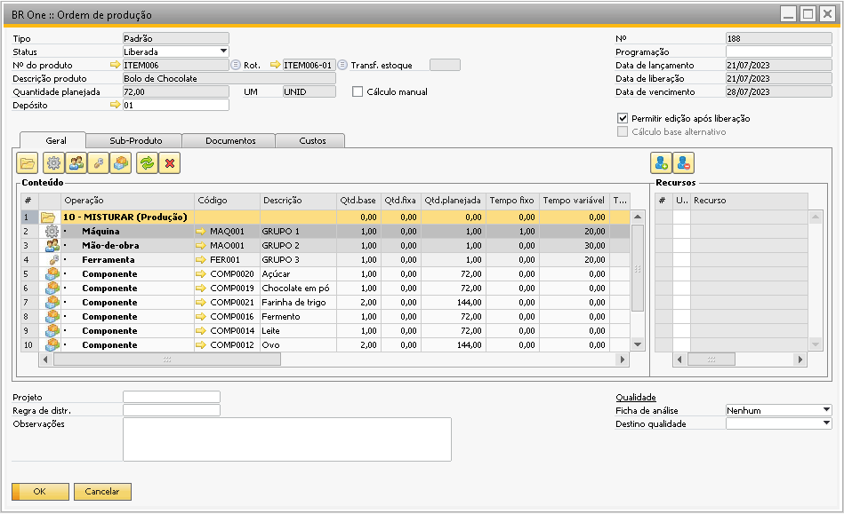{kind=link}
Cabeçalho
Para selecionar o campo Nº do produto é necessário clicar no CFL do campo para que a tela de seleção seja aberta e o usuário possa escolher um item, digitar o código inteiro do item ou só o início do código do item e apertar o TAB. Por padrão apenas os primeiros 100 itens são exibidos no CFL do campo Nº do produto.
Caso o usuário queira visualizar todos os itens, basta colocar um * no campo Nº do produto e apertar a tecla TAB, desta forma todos os itens que possuem roteiro serão listados.
Será possível notar que alguns itens podem aparecer mais de uma vez na lista, isso porque estes itens possuem mais de um roteiro, como no exemplo abaixo:
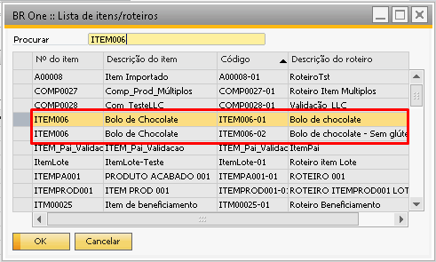 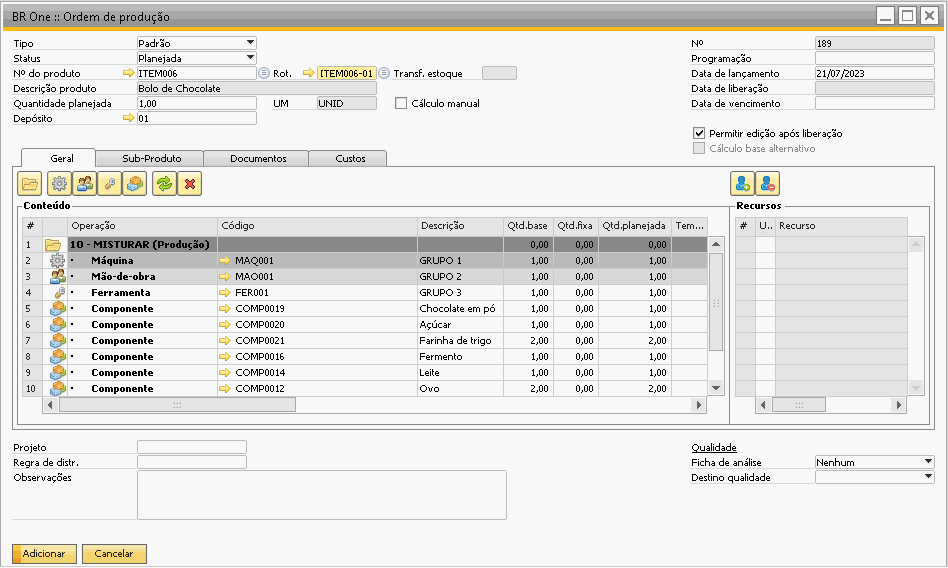{kind=link}
{kind=link}
Ao selecionar o item alguns campos são preenchidos automaticamente, são eles:
Descrição Produto: Descrição do item.
Rot.: Será preenchido com o roteiro que escolhemos. Este campo pode ser alterado manualmente caso queira abrir outro roteiro para o item selecionado.
Quantidade planejada: É a quantidade planejada para a produção de itens na OP.
Depósito: O depósito selecionado no cabeçalho do roteiro selecionado.
UM: Campo UM será preenchido com nome da UM da aba estoque.
Ao lado do campo UM existe o parâmetro Cálculo manual.
Após a seleção do item a aba Geral também será preenchida automaticamente com as informações cadastradas previamente no roteiro selecionado, mas essas informações podem ser ajustadas manualmente na OP.
Caso queira, após adicionar uma ordem de produção com o roteiro selecionado, é possível realizar a alteração desse roteiro utilizando a mesma ordem de produção, o campo “Rot.” ficará desbloqueado para edição. Ao fazer essa alteração, as linhas da aba “Geral” serão atualizadas de acordo com o novo roteiro selecionado. Se o roteiro anterior possuir documentos vinculados na aba “Documentos”, uma mensagem será exibida confirmando que os documentos de compra/venda serão desvinculados.
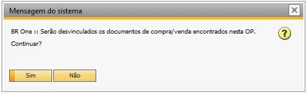Se confirmado com “Sim”, todos os documentos existentes para o roteiro anterior serão excluídos.
Obs: Só será possivel alterar o roteiro com o Status da Ordem de produção como “Planejada”.
Permitir edição após liberação
Se a flag Permitir edição após liberação estiver marcada na OP e o grupo de recursos tiver grupos de recursos alternativos, na grid será apresentado o grupo de recursos e os seus grupos alternativos.
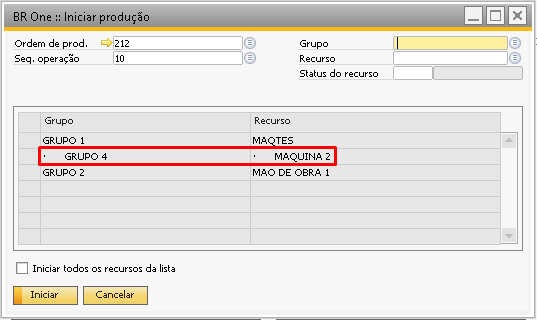{kind=link}
Se o usuário tentar iniciar a produção com um grupo de recursos cancelado flag cancelado na linha do recurso na OP, a seguinte mensagem será exibida:
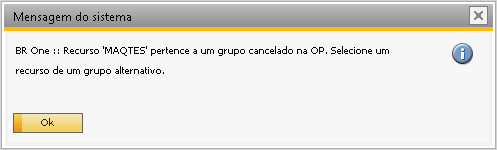{kind=link}
BR One :: Recurso X pertence a um grupo cancelado na OP. Selecione um recurso de um grupo alternativo.
Data de Vencimento
Se no cadastro do item do cabeçalho o campo Leadtime for 0 ou vazio e o Leadtime preferencial for Fixo em dias a data de vencimento será levada para os campos data de início e de término.
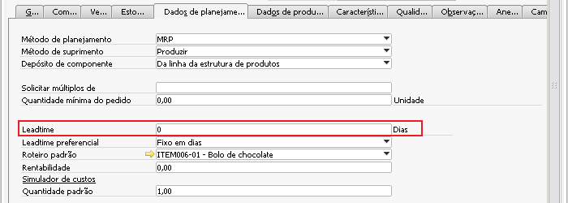 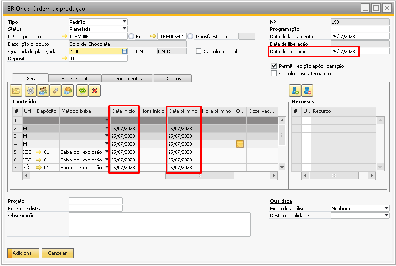{kind=link}
{kind=link}
Cálculo base alternativo (OP/Roteiro)
Quando essa opção estiver marcada, o BR One irá realizar os cálculos das quantidades e tempos das linhas das OPs de maneira alternativa. Esta configuração é útil para cálculos de quantidades muito pequenas. Habilitando este flag, por padrão ao criar um roteiro, trará a flag do cabeçalho do roteiro Cálculo base alternativo marcado.
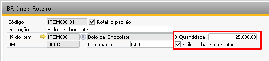{kind=link}
Na criação de uma OP, se a flag estiver marcada no roteiro tanto essa flag virá também marcada na OP quanto o campo Quantidade planejada também será preenchido com a quantidade definida no cabeçalho do roteiro.
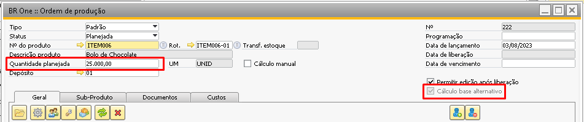{kind=link}
Os campos de quantidade base e tempos variáveis serão copiadas das linhas do roteiro.
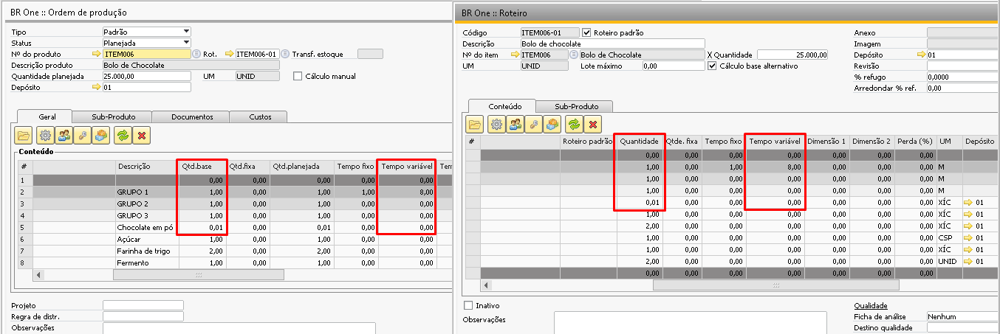{kind=link}
O cálculo será realizado baseado na quantidade do cabeçalho do roteiro. No exemplo acima, temos os seguintes dados:
Quantidade roteiro (cabeçalho): 25.000
Quantidade planejada OP (cabeçalho): 25.000
Quantidade base (linha): 0,005
Quantidade roteiro (cabeçalho): 25.000
Quantidade planejada OP (cabeçalho): 25.000
Quantidade base (linha): 0,01
Será feita a seguinte conta:
Quantidade base / Quantidade roteiro * Quantidade planejada
0,01 / 25.000 * 25.000 = 0,01
Fazendo o mesmo exemplo com outra quantidade planejada:
0,01 / 25.000 * 50.000 = 0,02
As mesmas regras se aplicam para os tempos, onde o cálculo seria:
Tempo variável / Quantidade roteiro * Quantidade planejada
8,00 / 25.000 * 25.000 = 8,00
Fazendo o mesmo exemplo com outra quantidade planejada:
8,00 / 25.000 * 50.000 = 16,00
Tipo: O campo Tipo indicará o tipo de ordem de produção, por padrão sempre virá preenchido como Padrão, mas pode ser alterado a OP for do tipo Retrabalho ou desmontagem.
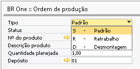{kind=link}
Para mudar o status de uma OP, basta selecionar o status desejado no campo Status. Quando uma OP é inserida, ela sempre vai estar com status Planejada. Uma OP planejada pode ter seu status alterado para Liberada. Uma OP liberada pode voltar a ser planejada, também pode ser fechada.
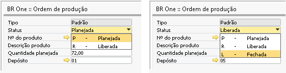{kind=link}
Caso a OP não seja liberada e nem fechada ela ainda pode ser cancelada. Caso a OP tenha apontamentos ela não poderá ser cancelada, e caso tenha apontamento de tempo em aberto não poderá ser fechada. Para o cancelamento é necessário seguir o caminho abaixo:
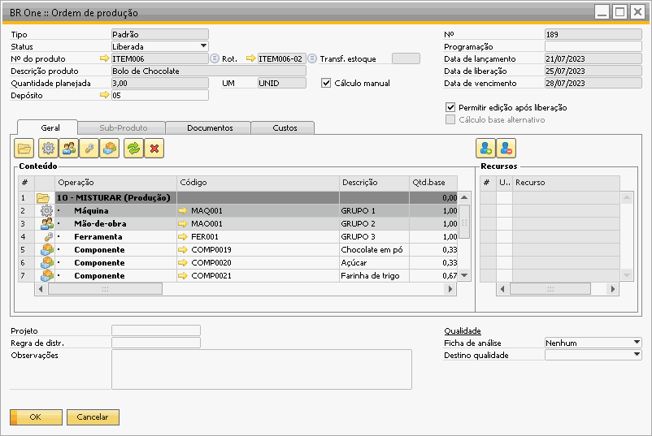{kind=link}
Não é possível fechar uma OP caso o usuário logado não possua a licença e permissões necessárias para realizar fechamentos contábeis. Para realizar o fechamento, o usuário logado deverá possuir licença do tipo Financial ou Professional e autorização para realizar lançamentos contábeis manual.
Caso uma OP tente ser fechada sem que o usuário logado e o usuário adicional possuam autorização para realizar lançamento contábil manual, será exibida a seguinte mensagem:
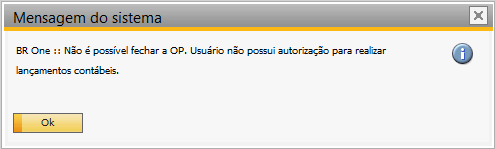{kind=link}
BR One :: Não é possível fechar a OP. Usuário não possui autorização para realizar lançamentos contábeis.
Caso uma OP tente ser fechada sem que o usuário logado e o usuário adicional possuam autorização para realizar reavaliação do estoque, será exibida a seguinte mensagem:
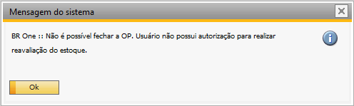{kind=link}
BR One :: Não é possível fechar a OP. Usuário não possui autorização para realizar reavaliação do estoque.
Caso uma OP tente ser fechada sem que o usuário logado não possua licenças ou autorização para realizar lançamento contábil manual e não haja nenhum usuário adicional cadastro, será exibida uma caixa de mensagem com a seguinte informação:
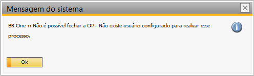{kind=link}
BR One :: Não é possível fechar a OP. Não existe usuário configurado para realiar esse processo.
Para poder editar a OP no status Liberada, marque a flag Permitir edição após liberação. Após a flag ser marcada, poderão ser inseridas novas operações, e dentro dessas operações poderão ser incluídos componentes, máquinas, mão de obra e ferramentas. Não poderão ser alteradas ou removidas operações anteriores.
Após incluir uma nova operação e componentes, ao clicar no botão atualizar, será exibida a mensagem de confirmação, perguntando se deseja recalcular tempos/quantidades planejadas para as novas linhas:
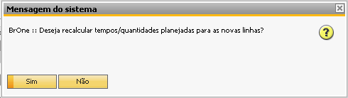{kind=link}
BR One :: Deseja recalcular tempos/quantidades planejadas para as novas linhas?
Ao clicar em Sim, aparecerá outra mensagem de confirmação:
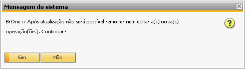{kind=link}
BR One :: Após atualização não será possível remover nem editar a(s) nova(s) operação(ões). Continuar?
Clique em Sim para confirmar e atualizar a OP. Se o usuário tentar inserir novo componente, máquina, mão de obra ou ferramenta, só será possível fazê-lo após a última sequência. Para o exemplo da OP acima, a última operação é da sequência 20, logo a seguinte mensagem será exibida:
{kind=link}
BR One :: Esta OP está liberada, só é permitido editar as operações que foram incluídas após a sequência x.
O campo Cálculo manual poderá ser marcado para OPs com status definido como Planejado e Liberado.
Nas OPs com status planejado e o campo Cálculo manual desmarcado, as colunas Quantidade planejada, Tempo planejado, Data início, Hora início, Data término, Hora término nas linhas estarão bloqueadas para edição. Para habilitá-las, basta marcar a flag no cabeçalho.
Já nas OPs com status liberado e o campo Cálculo manual desmarcado, toda a matriz estará bloqueada para edição. Ao marcar o campo no cabeçalho, as colunas Data início, Hora início, Data término, Hora término nas linhas serão habilitadas para edição.
Caso o campo Cálculo manual não esteja marcado, a quantidade planejada, tempo planejado, hora de início e término sempre serão calculados como as datas nas linhas de acordo com a data de vencimento da OP, antes de cada adição ou atualização de OP.
Se uma OP for duplicada, caso os dados da grid sejam diferentes ao conteúdo do roteiro, ao duplicar, esses dados não serão alterados, apenas se o roteiro for modificado.